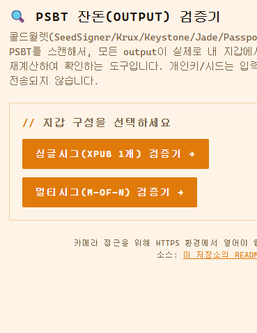

이것도 다크스키피(DarkSkippy) 공격에 대비하려고 만든 거다. 사소한 단점이 하나 있다면, 정작 다크스키피 공격 자체는 막아주지 못한다는 점이다. 🦉

1. 절차는 간단하다
하나의 확장공개키(xpub)에서 만들어지는 주소들은 정해진 계산식을 따른다. 그래서 이 앱에 확장공개키를 입력해두면, 그 지갑에서 나올 수 있는 주소들을 미리 다 계산해둘 수 있다.
서명을 할 때는 이런 흐름이다. 코디네이터(와치온리 앱)가 주문서(PSBT)를 만들고, 콜드월렛에서 그 주문서에 서명한 뒤, 서명이 끝난 주문서를 다시 내보낸다.
이 마지막 서명된 주문서를 'PSBT 잔돈검증기'가 확인한다. UTXO에서 돈을 보내고 남은 잔돈이, 다시 내 주소로 돌아오는 게 맞는지를 보는 거다.
2. 왜 굳이 이런 걸 만드나
사실 이건 콜드월렛 화면에서 육안으로도 확인할 수 있는 정보다. 그런데 대부분은 '보내는 상대방 주소'만 한 번 더 확인하지, 잔돈 주소까지는 잘 안 보게 된다.
코디네이터(와치온리 앱)를 신뢰한다면 사실 필요 없는 기능이다. 그래도 불안증에 시달리는 비트코이너라면, 마음의 평안을 위해 하나쯤 갖고 있을 만하다.
이 잔돈 검증기 하나로 절대다수의 공격으로부터는 안전해진다. 다만 앞서 말했듯, 다크스키피 공격만큼은 예외다.
실제로 써보고 싶다면 PSBT 페이지에서 바로 쓸 수 있다. 다만 확장공개키를 입력해야 하다 보니, 검증 파일을 받아본 굴삭기 모임이 아니라면 불안해서 못 쓸 거다. 내가 정보 수집 안 한다고 말해도 안 믿을 거 아닌가 ㅋㅋㅋ
PS. 위에서 말했듯, 이 잔돈검증기는 잔돈 주소를 확인해줄 뿐이다. 다크스키피 공격 자체를 막아주진 않는다.
3. 다크스키피는 뭘로 막나
- 콜드월렛 펌웨어를 업데이트할 때, 공식 GitHub에 게시된 SHA-256 값과 비교하고, 기기 자체의 서명 검증을 통과하는지 확인한다.
- 멀티시그를 쓴다.
PS2. 그렇다고 초보자에게 멀티시그를 추천하지는 않는다. 트랜잭션 경험이 50회가 안 됐다면, 멀티시그는 아직 쓰지 않는 걸 권한다.